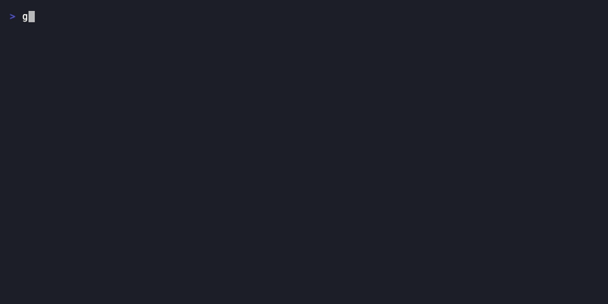

lore new
Create a documentation entry on demand.
Synopsis
lore new [type] ["what"] ["why"] [flags]
What Does This Do?
lore new creates a documentation entry manually, without waiting for a commit.
Three ways to use it:
| Mode | Command | When to use |
|---|---|---|
| Interactive | lore new |
Most common — Lore asks you questions |
| One-liner | lore new feature "add auth" "stateless scales" |
Quick capture when you know what to write |
| Retroactive | lore new --commit abc1234 |
Document a past commit you missed |
Analogy: If the post-commit hook captures context in real time,
lore newis the dedicated session where you document something you did earlier — or something that never produced a commit at all.
Real World Scenario
Morning standup. The team decided to migrate from MongoDB to PostgreSQL. No code yet — just a decision. You want to capture it before the details fade:
lore new decision "switch to PostgreSQL" "relational integrity for ACID transactions"Or later, you realize 3 commits from last week were never documented:
git log --oneline -5 lore new --commit abc1234

Arguments
| Argument | Required | Description | Example |
|---|---|---|---|
type |
No | Document type | decision, feature, bugfix, refactor, note |
what |
No | One-line summary (in quotes) | "add JWT auth middleware" |
why |
No | Rationale (in quotes) | "stateless auth scales better" |
If you don't provide arguments, Lore asks interactively.
Flags
| Flag | Type | Default | Description |
|---|---|---|---|
--commit <hash> |
string | — | Document a specific past commit |
--type <type> |
string | — | Pre-set the document type |
Document Types Explained
| Type | Icon | When to use | Example |
|---|---|---|---|
decision |
🏗️ | You chose between options | "Why PostgreSQL over MongoDB" |
feature |
✨ | You built something new | "Add rate limiting middleware" |
bugfix |
🐛 | You fixed a bug | "Fix race condition in token refresh" |
refactor |
♻️ | You restructured code | "Extract auth into dedicated package" |
note |
📝 | General knowledge | "Meeting notes: API versioning strategy" |
Tip: Not sure which type? Ask yourself: "Am I choosing between options?" →
decision. "Am I building something?" →feature. "Am I fixing something?" →bugfix. Still unsure? →note.
The Question Flow
When you run lore new interactively, here's what happens:
$ lore new
? Type: [Use arrows to select]
> feature
bugfix
decision
refactor
note
release
summary
? What changed: Add JWT auth middleware
(Pre-filled from context if available. Edit or press Enter.)
? Why was this done: Stateless authentication scales better than
server-side sessions. We don't want to manage Redis for session state.
✓ Captured: decision-add-jwt-auth-middleware-2026-03-16.md
For decision type, you get 2 bonus questions:
? Alternatives considered: Session-based auth with Redis; OAuth2-only
? Impact: All API endpoints now require Bearer token
Express Mode
If you answer all 3 main questions in under 3 seconds, Lore enters express mode and skips the bonus questions (Alternatives, Impact). This is for quick captures when you're in the flow.
Examples
Interactive (Most Common)
lore new
# → Asks Type, What, Why interactively
# → Creates .lore/docs/feature-add-auth-2026-03-16.md
One-Liner (When You Know What to Write)
lore new decision "switch to PostgreSQL" "relational integrity for user accounts, ACID transactions needed"
# → Creates document immediately, no prompts
Retroactive (Document a Past Commit)
# Find the commit you want to document
git log --oneline -5
# abc1234 feat: add rate limiting
# def5678 fix: token refresh bug
# Document it
lore new --commit abc1234
# → Pre-fills "What" from the commit message
# → You just need to add "Why"
Pre-Set Type
lore new --type refactor
# → Skips the type selection, asks What and Why
What Gets Created
A Markdown file in .lore/docs/ with this structure:
---
type: decision
date: 2026-03-16
status: draft
commit: abc1234567890abcdef
generated_by: manual
---
# Switch to PostgreSQL
## Why
Relational integrity for user accounts. We need ACID transactions
for the payment flow, and PostgreSQL's Go driver (pgx) is excellent.
## Alternatives Considered
- MongoDB: Flexible schema but we'd reimplement foreign keys in app code
- SQLite: Great for embedded use but not for multi-user API
## Impact
All persistence now goes through PostgreSQL. Migrations managed
with golang-migrate.
Common Questions
"What's the difference between lore new and the automatic hook?"
The hook fires automatically after every commit. Use lore new when you want to document something deliberately: a past commit, a decision made in a meeting, or a note not tied to any commit.
"Can I edit a document after creating it?"
Yes! The documents are just Markdown files in .lore/docs/. Open them in any editor. Or use lore angela polish for AI-assisted editing.
"What if I provide a wrong commit hash?"
lore new --commit nonexistent
# → Error: commit not found
# Lore validates the hash before proceeding.
Tips & Tricks
- One-liners for scripts:
lore new feature "add auth" "stateless scales"— no prompts. - After meetings:
lore new decisionto capture decisions while the context is fresh. - Retroactive batch:
git log --oneline -10thenlore new --commit <hash>for each. - Pre-set type:
--type refactorskips the selector when you already know. - Express mode: Answer all 3 quickly (< 3 seconds) and Lore skips bonus questions.
Exit Codes
| Code | Meaning |
|---|---|
0 |
Document created successfully |
1 |
Error (commit not found, not in git repo) |
3 |
Invalid arguments |
See Also
- lore pending — Documents that were deferred (Ctrl+C, non-TTY)
- lore show — View documents you've created
- Document Types — Complete type reference
- Quickstart — Step-by-step first use